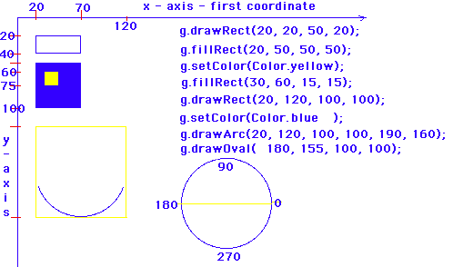

Today we are going to write our second java applet.
This time we are going to write it on the Sun. Here is some help.

import java.awt.Graphics;
import
java.awt.Color;
import java.applet.Applet;
public class Welcome extends Applet
{
public void paint (Graphics g)
{
g.drawString("Welcome to", 25, 25 );
g.drawString
("Java Programming!!!", 50, 50 );
g.drawString("My name is yourname", 75, 75 );
g.setColor(Color.yellow );
g.fillOval(30, 30, 150, 150 );
g.setColor(Color.blue);
g.drawOval
(50, 50, 35, 35 );
g.setColor(Color.red );
g.drawLine(105,80, 130,100);
g.drawLine(105,80, 85,100);
g.setColor(Color.magenta);
g.drawArc(50, 100, 150, 50, 210, 100);
}
}